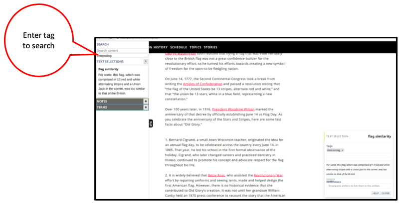

The sidebar is a panel on the left side of your window you can open and close. The sidebar is divided into sections by headers. Headers are artifacts names.
 How to open the Sidebar?
How to open the Sidebar?
Click this handle to open the Sidebar.
 How to close the Sidebar?
How to close the Sidebar?
Click the handle to close the sidebar.
Search for Content:
- Type words you want to find. Numbers on the right side of headers show how many of those items contain what you typed.
 To see specific artifacts containing what you searched for.
To see specific artifacts containing what you searched for.
 Clicking on a particular artifact in the sidebar opens it.
Clicking on a particular artifact in the sidebar opens it.Search for items by Tag:
- Type in the tag you are looking for.You can only search for one tag at a time.
- Clicking on a particular item in the sidebar opens it. You can search for Tags and Content at the same time.